Agent-first workflow
TermuxClaw keeps the conversation front and center while still exposing terminal, workspace, provider settings, and execution trace in a way that feels deliberate on mobile.
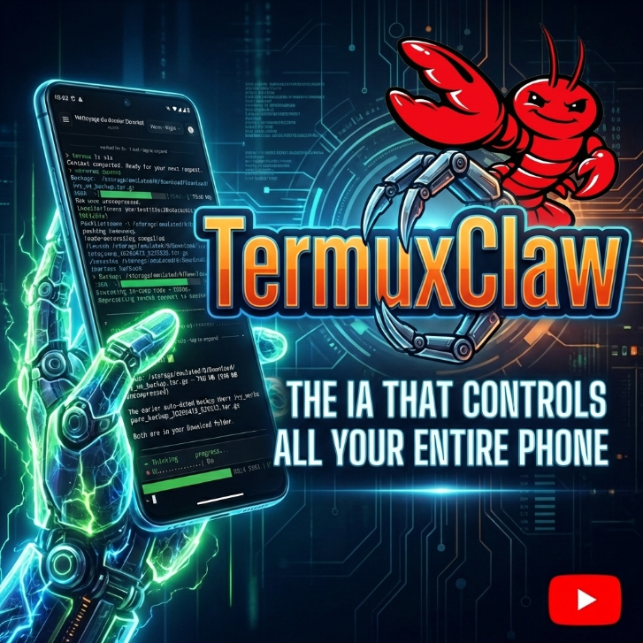
Private Product Showcase
Mobile Rival To OpenClaw
TermuxClaw is presented as a product, not as an open-source code drop. This page exposes the interface, the workflow, and the public release path while keeping the backend, runtime, and internal logic private.
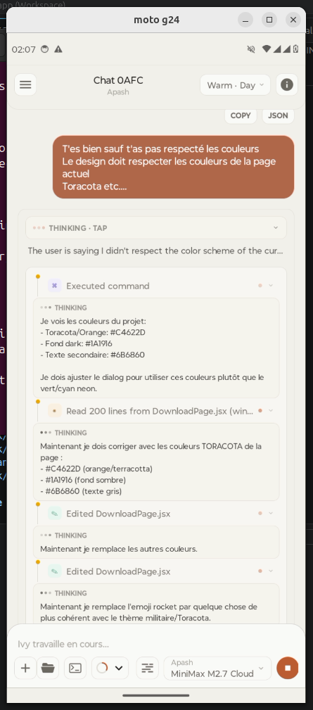
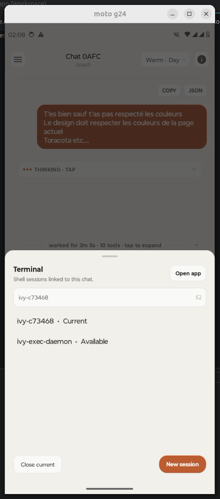
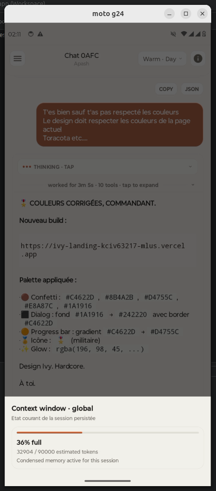
TermuxClaw keeps the conversation front and center while still exposing terminal, workspace, provider settings, and execution trace in a way that feels deliberate on mobile.
Browse folders, inspect files, manage skills, and keep the coding context visible without turning the product into a generic shell wrapper.
Sessions stay visible and trackable from chat, so ongoing work does not disappear the moment the UI changes.
Why This Repo Exists
This repository is the public shell around TermuxClaw. It gives people a way to understand the experience, see the interface, and install a build without exposing the private implementation behind it.
Screenshots
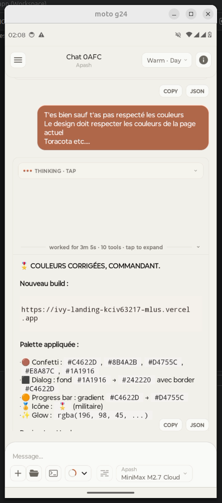
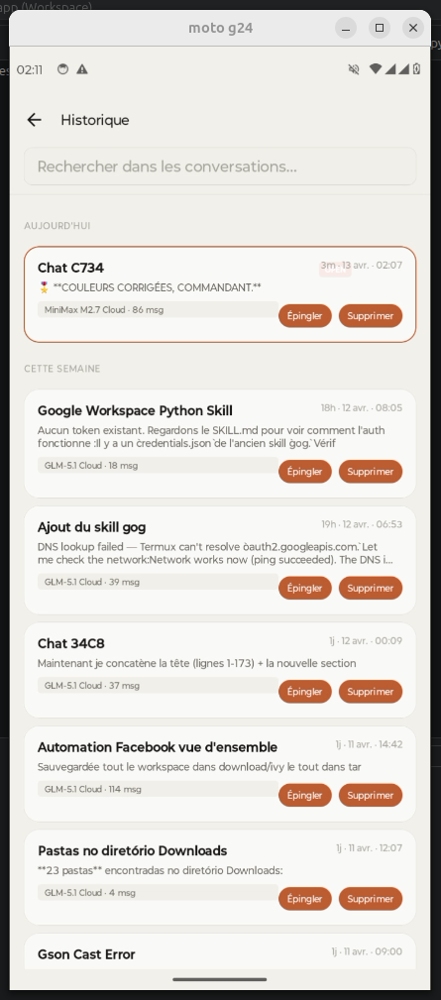
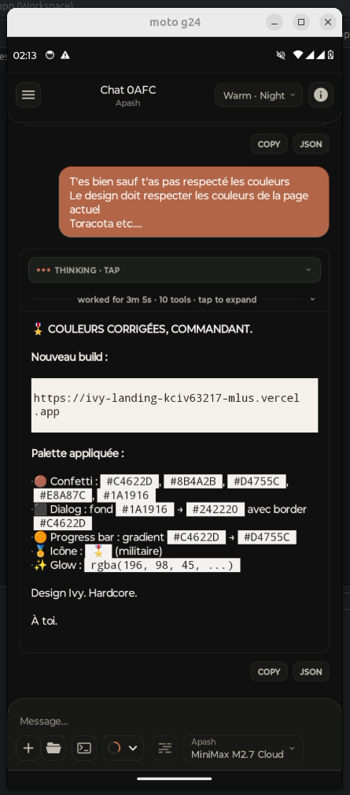
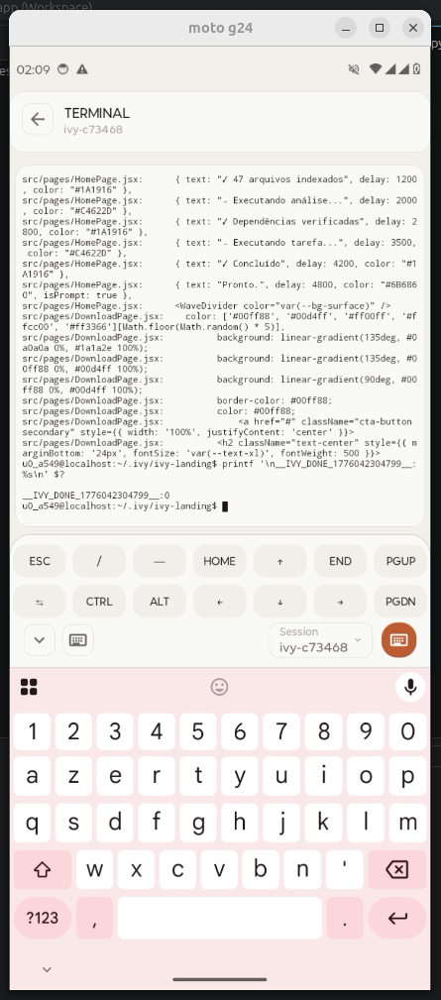
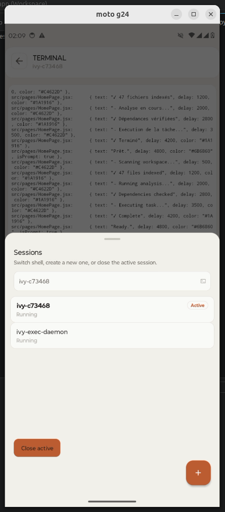
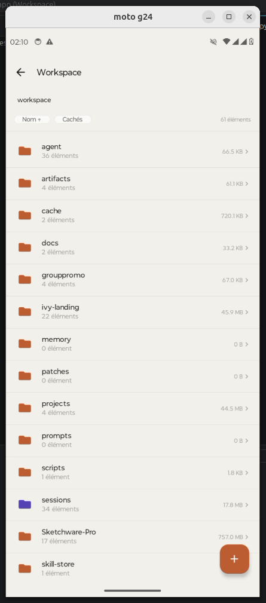
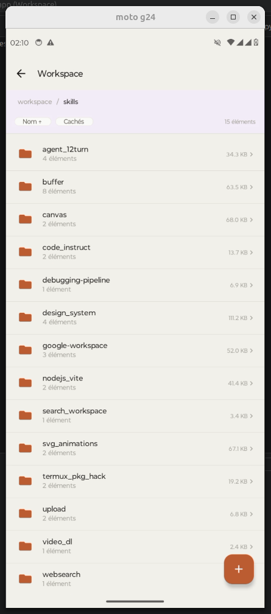
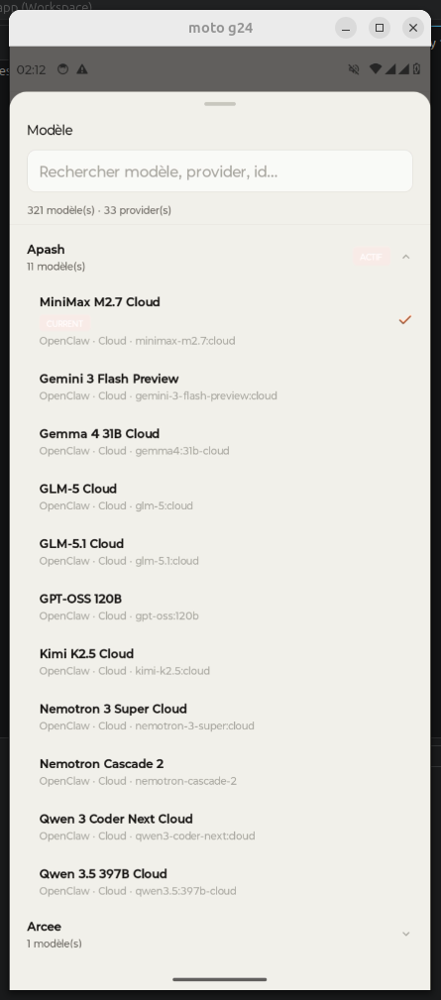
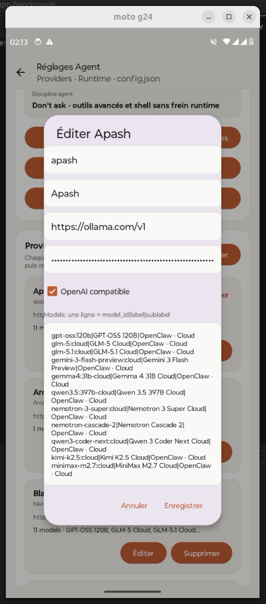
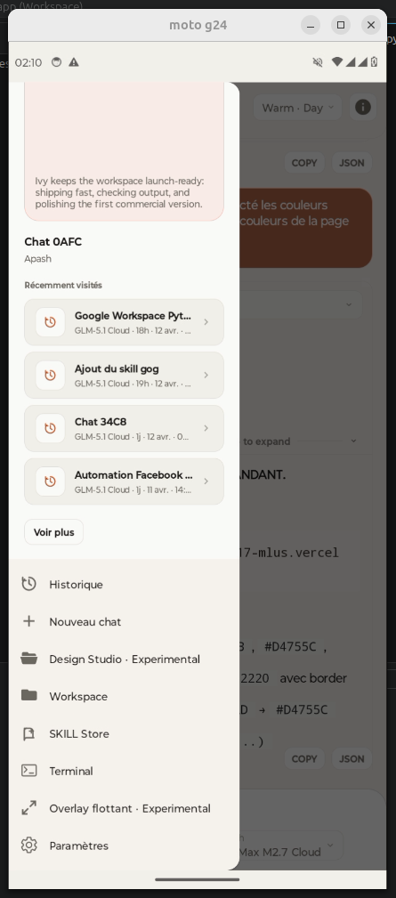
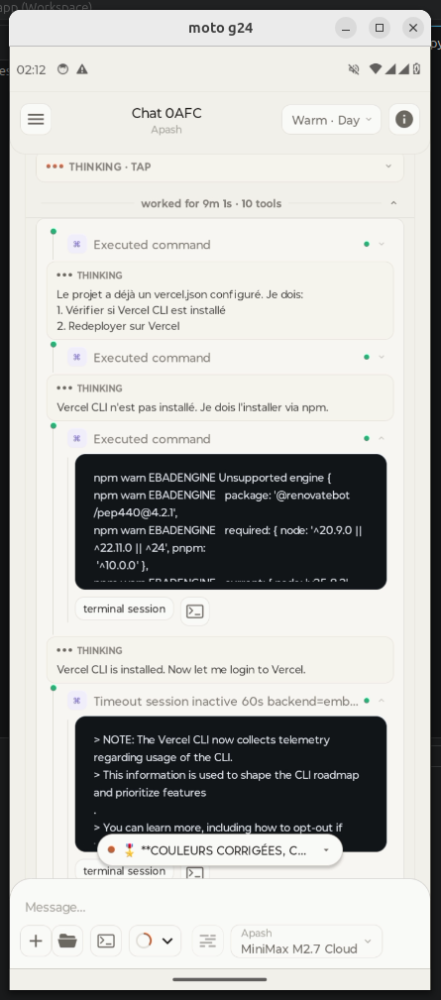
Demo
Release
The product can be shared publicly through binary releases while the implementation remains private.
FAQ
No. This repository is a public presentation layer for the app, not the private source code of the product.
Public builds, screenshots, and product-facing materials. The backend logic and internal runtime are not part of this repository.
Yes. It can stay a showcase, become a richer landing page, or later expose more selected layers if you choose to open them.